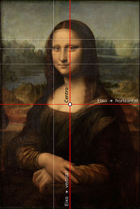

Proporção Áurea
Proporção áurea, número de ouro, número áureo, secção áurea, proporção de ouro é uma constante real algébrica irracional denotada pela letra grega Phi, em homenagem ao escultor Phideas (Fídias), que a teria utilizado para conceber o Parthenon, e com o valor arredondado a três casas decimais de 1,618.
Também é chamada de seção áurea (do latim sectio aurea), razão áurea, razão de ouro, média e extrema razão (Euclides), divina proporção, divina seção (do latim sectio divina), proporção em extrema razão, divisão de extrema razão ou áurea excelência. O número de ouro é ainda frequentemente chamado razão de Phidias.

O Homem Vitruviano, Leonardo Da Vinci
Mona Lisa, Leonardo Da Vinci
Desde a Antiguidade, a proporção áurea é usada na arte. É frequente a sua utilização em pinturas renascentistas, como as do mestre Giotto. Este número está envolvido com a natureza do crescimento. Phi (não confundir com o número Pi), como é chamado o número de ouro, pode ser encontrado de forma aproximada no homem (o tamanho das falanges, ossos dos dedos, por exemplo), nas colmeias, entre inúmeros outros exemplos que envolvem a ordem de crescimento na natureza.
Diversos aspectos até mesmo do corpo humano seguem essa proporção, como, por exemplo: A altura do corpo humano e a medida do umbigo até o chão; altura do crânio e a medida da mandíbula até o alto da cabeça; medida da cintura até a cabeça e o tamanho do tórax; medida do ombro à ponta do dedo e a medida do cotovelo à ponta do dedo; tamanho dos dedos e a medida da dobra central até a ponta; medida da dobra central até a ponta dividido e da segunda dobra até a ponta; medida do seu quadril ao chão e a medida do seu joelho até o chão, entre outras. Essas proporções anatômicas ideais foram representadas pelo "Homem Vitruviano", obra de Leonardo Da Vinci apresentada ao lado.
A Mona Lisa, de Leonardo da Vinci, tem a proporção áurea nas relações entre o tronco e a cabeça, bem como nos elementos da face, mas isso é uma característica inerente ao ser humano e tais proporções podem ser encontradas na maioria das pinturas em que a anatomia tenha sido respeitada. Medições feitas por computador mostraram que os olhos de Mona Lisa estão situados em subdivisões áureas da tela. Na imagem apresentada ao lado, as linhas vermelhas representam os eixos vertical e horizontal. As linhas brancas são divisões áureas. Os olhos e a boca estão posicionados nessa estrutura geométrica
O número de ouro está presente em diversas obras de compositores clássicos, sendo o exemplo mais notável a famosa Sinfonia n.º 5, de Ludwig van Beethoven. O compositor húngaro Béla Bartók também utilizou esta relação de proporcionalidade constantemente em sua obra, assim como o fez o francês Claude Debussy em diversas composições.
No jazz, há músicos que usam os números da série Fibonacci na divisão rítmica e dos compassos.
No livro "O Número de Ouro", Matila Ghyka demonstrou a existência da proporção áurea em textos escritos por Victor Hugo, Shakespeare, Paul Valéry, Pierre Louys, entre outros. Na pesquisa, Ghyka relacionou as estrofes de acordo com o ritmo da leitura, o que ele chamou de ritmo prosódico.
O diretor russo Sergei Eisenstein utilizou o número Phi no filme O Encouraçado Potemkin para marcar os inícios de cenas importantes da trama, medindo a razão pelo tamanho das fitas de película.
Na Pirâmide de Quéops, no Egito, cada bloco é 1,618 vezes maior que o bloco do nível logo acima e também, as câmaras em seu interior seguem esta proporção, de forma que os comprimentos das salas são 1,618 vezes maiores que as larguras. Ainda, nas ruínas do Parthenom, na Grécia, são notadas inúmeras presenças da Razão Áurea.
No mercado financeiro, a aplicação da sequência e da razão de ouro, mais especificamente o seu inverso, 0,618, na análise dos padrões de reversão de ações é o ponto que liga Fibonacci ao mercado de ações. São pontos baseados nos números descobertos pelo italiano que, segundo muitos analistas, podem indicar os níveis de suporte ou resistência de um papel.